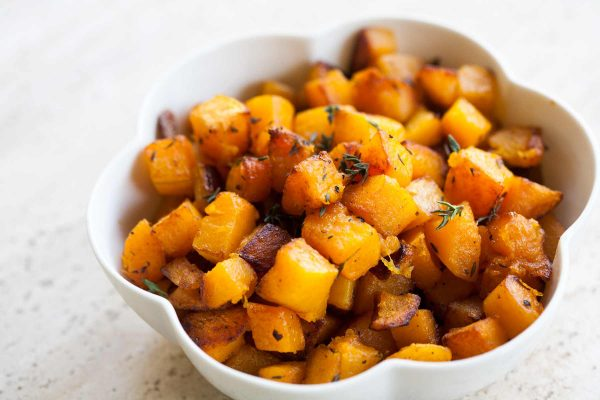

| Ingredients |
Quantity |
| Butternut Squash, cubed |
2 cups |
| virgin olive oil |
3 TBs (or to taste) |
| lemon |
1 tsp |
| sea salt and pepper |
as per te taste |
Process:
Step 1: Fill the bottom of the steamer with 2 inches of water.
Step 2:While steam is building up cut squash into 1" cubes.
Step 3:Steam, covered with a tight fitting lid, for 7 minutes.Butternut Squash is done when it is tender (a fork caneasily pierce it), yet still firm enough to hold its shape.
Step 4:Transfer to a bowl. For more flavor, toss Butternut Squash with the oil, lemon juice, salt, and pepper while it is still hot. Research shows that fat-soluble vitamins and carotenoids found in foods, such as Winter Squash, may be better absorbed when consumed with fat-containing foods like extra virgin olive oil.

- Time: 15 min
- Serves: 2 (as side dish)
| Ingredients |
Quantity |
| fresh shiitake mushrooms, sliced thick |
2 cups |
| chicken or vegetable broth |
2 TBs |
| minced fresh ginger |
2 TBs |
| medium cloves garlic, pressed or finely chopped |
2 |
| coarsely chopped scallion |
1 cup |
| soy sauce |
2 TBs |
| salt and pepper |
(as per the taste) |
Process:
Step 1: Chop garlic and let sit for at least 5 minutes to bring out its hidden health benefits.
Step 2:Prepare rest of ingredients.
Step 3:Simmer ginger, garlic, mushrooms, and scallions in broth for about 3 minutes on medium high heat. Season with soy sauce, salt, and pepper.